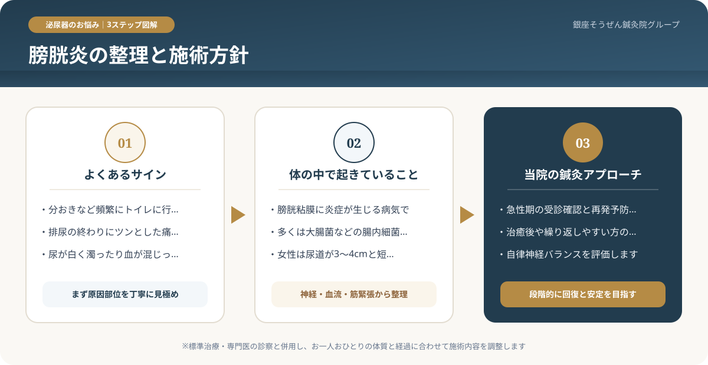

膀胱炎の鍼灸
急性期は抗菌薬治療が最優先です。繰り返す膀胱炎の冷えや免疫力低下に対し、ツボ施術と養生で再発予防をサポートします。
まず知っておきたい要点と改善の流れ

膀胱粘膜に炎症が生じる病気で、多くは大腸菌などの腸内細菌が尿道から侵入して増殖することで発症します。女性は尿道が3〜4cmと短く好発しやすく、疲労やストレスによる免疫力低下、トイレの我慢、冷え、便秘、生理用品の長時間使用、閉経後のエストロゲン減少などが誘因となります。放置すると腎盂腎炎へ進展し高熱や腰痛を招くことがあるため、急性期は泌尿器科での抗菌薬治療が最優先です。
このようなお悩みはありませんか？
- ✓10分おきなど頻繁にトイレに行きたくなる
- ✓排尿の終わりにツンとした痛みや灼熱感がある
- ✓尿が白く濁ったり血が混じったりする
- ✓膀胱炎を何度も繰り返してしまう
当院の施術アプローチ・改善の流れ
なぜ鍼灸で改善へ向かうのか？（作用機序の図解）
膀胱炎に対する鍼灸は、仙髄排尿反射（陰部神経）と骨盤底の協調調整機序を通じて、お体本来の回復力を引き出します。

膀胱・尿道括約筋を支配する仙髄神経（S2〜S4）領域の経穴へ的確にアプローチします。
弱まった骨盤底筋の収縮サポートと、過敏になった膀胱排尿筋の鎮静をバランスよく促します。
腰殿部と下腹部の血流を高め、冷えや過緊張による頻尿・違和感・痛みを和らげます。
泌尿器科の評価やセルフエクササイズと併用し、安心して外出できる日常の回復を支えます。
院長YouTube解説・関連動画
膀胱炎の主な症状はトイレの回数の増加や痛みなど様々
膀胱炎の主な症状は、約10分前後の短い時間で頻繁に起こる尿意でトイレに行く回数が増えることや排尿の後半や終わった後に起こる痛み、突然耐えられないくらいの強い尿意を感じる尿意切迫感、目ではっきりわかるくらいのレベルの血尿、排尿後もまだ残っているような感覚になる残尿感などがあります。
血尿は、最初から最後まで同じ濃さではなく、膀胱がからっぽになる最後に強くなることが多いです。
さらに、白血球や炎症を起こし剥がれてしまった膀胱の粘膜が混ざることが原因で尿が白く濁り膿でドロっとしたものが混ざっていたり、尿のにおいがきつくなったりするという症状があることもあります。
膀胱炎の主な症状では、1回に出る尿が少量になるということも特徴の1つです。膀胱炎では発熱するという症状はほとんどありません。
しかし、症状に腰痛や発熱がある場合があります。そうなってしまうと、炎症は腎臓の腎孟にまで広がっています。下腹部の不快感や痛みなどを合わせて起こしてしまう腎盂腎炎になっている場合もあるため、注意が必要です。
膀胱炎には色々な種類があります。1つ目は単純性膀胱炎です。単純性膀胱炎は、機能や形態的に尿路に異常がない人に起きる膀胱炎です。 単純性膀胱炎の主な症状は、頻尿や残尿感などです。
2つ目は、複雑性膀胱炎です。複雑性膀胱炎の症状はないか弱い場合が多いです。しかし、急に症状が強まったり、発熱や腰痛がある場合には注意が必要です。
３つ目は間質性膀胱炎です。普通であれば、膀胱に約200～400ml尿がたまると尿意を感じます。しかし、間質性膀胱炎の場合、膀胱が膨らまないため、100ml以下で膀胱がいっぱいになります。
間質性膀胱炎では、尿がたまると下腹部の激しい痛みを感じ、トイレに行く回数も非常に増加するという症状が見られます。
他にも、膀胱粘膜に袋状の病変が現れる嚢胞性膀胱炎や、カビの感染によって膀胱が炎症を起こしてしまう真菌性膀胱炎などもあります。
頻尿:頻繁に尿意を感じるが、毎回の尿量は少ないことが特徴です。
排尿時の痛みや灼熱感:尿を排泄する際に痛みや灼熱感を感じることがあります。
下腹部の圧迫感や痛み:膀胱のあたりに圧迫感や痛みを感じることがあります。
血尿:尿に血が混じることがあります。尿がピンク、赤、またはコーラ色に見えることがあります。
濁った尿:尿が濁ったり、異様な臭いがすることがあります。
全身の倦怠感:疲れやすく、全身がだるいと感じることがあります。
発熱と寒気:低熱が出ることがありますが、高熱が出る場合は腎盂腎炎などのより深刻な尿路感染症を示す可能性があります。
膀胱炎を改善するには、炎症を起こす原因である大腸菌などを殺すための抗生剤を使うことが多いです。抗生剤を使用すると、多くの場合3日以内、遅い人でも1週間以内には症状が改善してきます。
軽い症状の膀胱炎の場合は、放っておいても自然に治ることもあります。抗生剤の効果があまり見られない時は、種類を変えたり漢方を使うこともあります。
膀胱炎の改善には、ニューキノロン系の薬がよく使われます。しかし、多くのニューキノロン系の薬は妊娠している人へ使ってはいけません。
膀胱炎は妊娠するくらいの年の女性が多いです。妊娠の可能性があるかないかを必ず医師に伝えて薬を選択してもらうように注意してください。
膀胱炎の改善には、水分を十分に摂ることで尿の量を増やすことも大事です。温かい飲み物などで水分を十分に摂ることを意識してください。いつもより多くの尿を出すことで、膀胱で増えてしまった菌を体の外へ出すのです。
改善が遅くなると、腎盂腎炎を起こし、高熱などの症状が出ることもあります。十分に注意してください。また、過度のアルコールの摂取も注意が必要です。ビールやワインなどアルコール飲料の摂りすぎは控えてください。
膀胱炎の改善において最もお勧めの方法は、抗生物質を使うことです。膀胱炎の原因の菌を抗生物質によって取り除くことができれば、３日以内で症状は改善します。
膀胱炎は膀胱内壁の細菌の繁殖と炎症によって症状が現れます。まずは大腸菌など膀胱の中で繁殖している細菌を取り除くことが必要なのです。
抗生物質は膀胱炎の改善には非常に効果的です。飲み始めてから１週間以内に症状は改善すると考えて良いです。
抗生物質:膀胱炎の大半は細菌感染によるもので、抗生物質が一般的な改善法です。よく処方される抗生物質には、トリメトプリム/スルファメトキサゾール（Bactrim、Septra）、フォスホマイシン（Monurol）、ニトロフラントイン（Macrobid、Macrodantin）、セフトリアキソン（Rocephin）などがあります。感染の種類と抗生物質に対する細菌の感受性に基づいて、最適な薬が選択されます。
痛みを和らげる薬:排尿時の痛みを和らげるために、フェナゾピリジン（Pyridium）などの鎮痛剤が処方されることがあります。
多くの水分摂取:豊富な水分を摂取することで、細菌を尿とともに排出しやすくなります。
カフェインやアルコールの摂取を避ける:カフェインやアルコールは膀胱を刺激する可能性がありますので、これらの摂取を避けることが推奨されます。
良好な個人衛生の維持:性行為後に排尿する、前から後ろへ拭くなどの良好な個人衛生を実践します。
クランベリー製品:クランベリー製品（ジュースやサプリメント）が予防に役立つとされていますが、実際の効果については意見が分かれています。
・抗生物質
膀胱炎の改善の主要な目的は、感染を引き起こしている細菌を排除することです。以下の抗生物質が一般的に処方されます。
トリメトプリム/スルファメトキサゾール（Bactrim, Septra）: 広範囲の細菌に効果があります。
ニトロフラントイン（Macrobid, Macrodantin）: 膀胱感染に特化した抗生物質で、尿路系に集中するため副作用が少ないです。
フォスホマイシン（Monurol）: 単回投与で効果的な場合があり、使用が簡単です。
セフトリアキソン（Rocephin）: 重症の場合や他の抗生物質に耐性を示す細菌に対して用いられることがあります。
・鎮痛剤
排尿時の痛みや灼熱感を和らげるために、以下のような鎮痛剤が処方されることがあります。
フェナゾピリジン（Pyridium）: 尿路の鎮痛剤で、排尿時の痛みや不快感を軽減します。ただし、これは症状を和らげるだけで、感染そのものを改善するわけではありません。
膀胱炎の予防で大切なことは3つあります。膀胱内に菌を入れない、膀胱内で菌を増やさない、身体の抵抗力を落とさないということです。
具体的には、トイレを我慢しない、身体の抵抗力や免疫カを落とさない、陰部を清潔にする、性行為の後はトイレに行く、などの方法があります。
ストレスや過労、過激なダイエットを避けたり、下半身を冷やさないように注意して生活を送ったり、栄養のバランスが良い食事をして免疫力を高めたり、生理用ナプキンやおりものシートは3時間以内に変え常に清潔な状態でいられるよう心がけたりすることが必要です。
排便後は少なくても肛門とその周りに大腸菌が付いています。トイレットペーパーお尻をで拭く時、後ろから前に拭くと尿道に菌が入りやすくなります。常に前から後ろへ拭くことを心がけることも大事です。
また、便秘も膀胱炎を起こしやすいため、注意してください。
膀胱炎の疑いがある時は早めに病院に行くことが大切です。どうしてもすぐに行くことが難しい場合は、温かい飲み物をたくさん飲み、いつもより多くなるべく多い回数トイレに行き、膀胱を洗うようにしてください。
腰の冷えには注意し、きちんと休んで体力を落とさない事も重要です。女性の場合は、ホルモンの低下や冷えから膀胱炎を繰り返してしまうことが多いです。そのような場合は、原因となっている基礎の部分から改善することが必要です。
そのために漢方薬を使う人もいます。漢方薬局などで自分にあった漢方について相談することも良いかもしれません。
ツボの位置と押し方
太谿は、アキレス腱と内くるぶしの間にあるツボです。探すときは、アキレス腱と内くるぶしの間を指で押さえながら少しずつずらして探すと探しやすいです。指がはまるくぼみの部分を探しましょう。
押すときは、片足ずつ押します。親指を重ねてしっかりと押しましょう。
関元は、体の中心のライン上にあるツボです。へそから指4本分下に下がったところにあります。
押すときは軽く押しましょう。
湧泉は、足の裏の人差し指からかかとまでの直線を3等分したとき、指の付け根に近い場所にあるツボです。探すときは、足の指を曲げ、最も大きくくぼむ部分を探しましょう。
押すときは、親指の腹で押します。垂直にまっすぐ押すことを意識して押しましょう。棒状のものを使ってゆっくりと深く押すこともお勧めです。
腎・泌尿器・排尿トラブル・透析サポートのツボ図解
実際の施術ではお一人おひとりの体質・症状に合わせて選穴しますが、過活動膀胱・尿失禁・前立腺症状・CKD/透析QOLの標準治療併用ケアの臨床でよく用いられる代表的なツボの目安です。

📌 代表的なツボの詳細一覧表を開く（6穴） ▼
| ツボ名 | 位置の目安 | 主な狙い | セルフケアの注意点 |
|---|---|---|---|
| 腎兪（じんゆ） | 腰のくびれの高さ、背骨から指2本分外側 | 腎・泌尿器周囲の自律神経と冷え・倦怠感ケア | 腰部を温めることで夜間頻尿の負担も和らぎます。 |
| 次髎（じりょう） | 仙骨の2番目のくぼみ（お尻の上中央付近） | 仙髄排尿神経（S2〜S4）を介した膀胱機能調整の最重要穴 | 腹圧性・切迫性尿失禁や過活動膀胱の国際RCTでも定番です。 |
| 関元（かんげん） | おへそから指4本分下 | 下腹部の冷え改善・骨盤内の循環サポート | 排尿を済ませた状態で優しく温めます。 |
| 中極（ちゅうきょく） | 恥骨のすぐ上、おへそから指5本分下 | 膀胱の過敏性・残尿感・頻尿の調整 | 強く押し込まず軽く手を当てる・温める程度にします。 |
| 三陰交（さんいんこう） | 内くるぶしの上から指4本分上 | 脛骨神経を介した膀胱過活動の鎮静・睡眠の質改善 | 透析中の方はシャント腕を避け非透析日に安全に行います。 |
| 太渓（たいけい） | 内くるぶしとアキレス腱の間 | 腎経の原穴として冷え・むくみ・夜間頻尿の土台づくり | 足首を冷やさない工夫と合わせてケアします。 |
国際査読論文の科学的エビデンス
国際的な医学データベース（PubMed・Cochrane等）で報告されている過活動膀胱・尿失禁・前立腺症状・CKD/透析QOLの標準治療併用ケア領域の代表的な査読済み鍼灸研究をまとめています（標準治療との併用や研究上の限界を含めて正確に掲載）。
📚 査読論文データ・PubMed出典リンクを開く（4件） ▼
| 年・研究デザイン | 対象・規模 | 主な結果 | 限界・出典 |
|---|---|---|---|
| 2017年 大規模多施設RCT | 腹圧性尿失禁女性 504名（12病院・腰仙部電鍼） | 6週時の1時間パッド尿漏れ量は電鍼-9.9g vs シャム-2.6g（差7.4g, P<0.001）、30週まで失禁減少持続。 | 30週以降の長期持続は今後の検証課題。 JAMA (PMID: 28655016) |
| 2021年 大規模多施設RCT | 慢性前立腺炎/CPPS男性 440名（10病院） | 8週時のレスポンダー率60.6% vs シャム36.8%（OR 2.6, P<0.001）、32週時点でも61.5% vs 38.3%持続。 | 細菌性前立腺炎・悪性疾患の除外が前提。 Ann Intern Med (PMID: 34399062) |
| 2022年 Cochraneレビュー | 過活動膀胱 15研究（n=1,395） | 薬物比較で症状改善率RR 1.25・軽度有害事象減少（RR 0.34）・夜間頻尿減少。重篤な有害事象なし。 | シャム比較では不確実、GRADE低〜非常に低。 Cochrane (PMID: 36148895) |
| 2023年 メタ解析 | 過活動膀胱 30研究統合 | シャム比較でOABSS有意改善（MD -1.13, P=0.01）、薬物併用でOABSS MD -2.28（P<0.00001）。 | 異質性が高く（I²=67〜94%）、GRADE低〜非常に低。 Front Neurol (PMID: 36712423) |
参考文献・出典
- 2017年 大規模多施設RCT（腹圧性尿失禁女性 504名（12病院・腰仙部電鍼））— JAMA (PMID: 28655016)
- 2021年 大規模多施設RCT（慢性前立腺炎/CPPS男性 440名（10病院））— Ann Intern Med (PMID: 34399062)
- 2022年 Cochraneレビュー（過活動膀胱 15研究（n=1,395））— Cochrane (PMID: 36148895)
- 2023年 メタ解析（過活動膀胱 30研究統合）— Front Neurol (PMID: 36712423)
よくある質問（FAQ）
Q. 膀胱炎の強い排尿痛や血尿がある時でも鍼灸を受けられますか？▼
Q. 膀胱炎を何度も繰り返すのですが、鍼灸はどのようなサポートができますか？▼
あわせて読まれる関連疾患（泌尿器のお悩み）
加齢やホルモン変化で前立腺が肥大し排尿障害を起こす良性疾患です。泌尿器科管理と併用し、骨盤内の血流と排尿リズムを整えます。
緊急透析と腎臓専門医の管理が必須で急性期鍼灸は禁忌です。透析安定期・主治医許可下のQOL維持のみ慎重に支えます。
単純ヘルペスウイルスによる性器の水疱・潰瘍と痛みを生じる感染症です。抗ウイルス薬治療が最優先で、水疱・急性期の患部施術は禁忌です。
腎臓から尿道までの尿路に結石ができる病気です。激痛発作や発熱・水腎症合併時は救急・泌尿器科を最優先に、安定期の巡りケアを補完します。
尿の結晶が尿管に詰まり激しい痛みを起こす状態です。激痛発作や発熱・水腎症合併時は救急・泌尿器科が最優先で、安定期に補完ケアを行います。
精巣の発生・分化過程の障害による機能異常です。泌尿器科での精査・腫瘍化評価やホルモン療法を最優先に、安定期の体調面を補完します。
CLINICAL RECOVERY CASES
✨ 実際の臨床改善事例・回復経過を見る
銀座本院をはじめ各院での実際の改善事例を症状別に絞り込んでご確認いただけます。
おひとりで悩まず、まずはご相談ください
銀座本院・川口・大宮・横浜・博多・田無の各院でご予約を承っております。